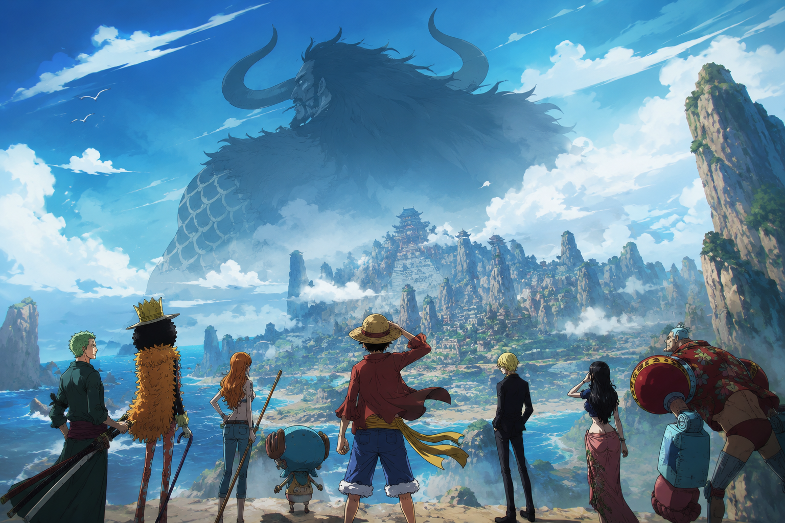

Uma nova era para ONE PIECE começou
A estreia oficial do arco aconteceu em abril de 2026, marcando não apenas o retorno do anime após a pausa da Toei Animation, mas também o início de uma nova estratégia de produção para a série, agora com temporadas divididas e uma qualidade visual ainda mais refinada.
Elbaph sempre foi mencionada como um dos lugares mais misteriosos e importantes do mundo de ONE PIECE. Desde Little Garden, passando por Enies Lobby, Whole Cake e Egghead, o nome da ilha dos gigantes carregava peso, história e expectativa.
Agora, finalmente, os Chapéus de Palha chegaram até ela.
O arco começou oficialmente após a pausa de produção.
Uma ilha ligada a guerra, tradição e mitologia nórdica.
Elbaph aproxima a obra dos seus maiores mistérios.

O que é Elbaph?
Elbaph é conhecida como a “terra dos gigantes”, uma nação lendária inspirada diretamente na mitologia nórdica e na cultura viking.
O local é habitado por guerreiros gigantes extremamente poderosos, respeitados em todo o mundo por sua força, honra e tradição militar. A ilha sempre foi tratada como um símbolo de guerra, orgulho e poder absoluto dentro do universo criado por Eiichiro Oda.
- O Século Perdido
- A história dos gigantes ancestrais
- O Governo Mundial
- Os Cavaleiros Sagrados
- O incidente de God Valley
- Possíveis segredos finais do mundo de ONE PIECE
O arco também promete mergulhar ainda mais nas origens do próprio mundo da obra, aproximando a narrativa de sua reta final.
O sonho de Usopp finalmente está acontecendo
Se existe um personagem que sempre esteve conectado emocionalmente com Elbaph, esse personagem é Usopp.
Desde os acontecimentos em Little Garden, Usopp admira os gigantes Dorry e Brogy, vendo neles a representação perfeita do que significa ser um “guerreiro valente dos mares”.
Por isso, a chegada do bando em Elbaph possui um peso emocional gigantesco para o personagem.
Muitos fãs acreditam que Elbaph será o arco definitivo de crescimento do personagem.
A continuação direta de Egghead
Elbaph começa imediatamente após os acontecimentos devastadores de Egghead. Depois da transmissão mundial de Vegapunk revelar informações chocantes sobre o mundo, o caos político se espalhou pelos mares.
A morte de Vegapunk, o avanço dos Cinco Anciões e os conflitos envolvendo o Governo Mundial mudaram completamente o equilíbrio global. Agora, os Chapéus de Palha entram em uma ilha que pode possuir respostas ligadas justamente aos maiores mistérios da série.
As consequências de Egghead ainda ecoam
- O mundo está entrando em colapso
- O Governo Mundial está mais agressivo do que nunca
- Os Cavaleiros Sagrados começam a ganhar destaque
- O nome de Luffy cresce cada vez mais como ameaça global
Elbaph funciona como um arco de transição para a reta final definitiva de ONE PIECE.
Loki: o príncipe gigante que pode mudar tudo
Um dos nomes mais comentados do arco é Loki. Apresentado anteriormente apenas como uma figura mencionada em diálogos antigos, o personagem finalmente ganha importância real na história.
Loki é o príncipe de Elbaph e está envolvido em acontecimentos extremamente misteriosos ligados à morte do rei Harald.
A narrativa sugere uma conspiração interna em Elbaph, o interesse direto do Governo Mundial na ilha e a possibilidade de Loki carregar segredos fundamentais sobre o passado do mundo.
Os Cavaleiros Sagrados entram em cena
Elbaph também marca a expansão de um dos grupos mais misteriosos introduzidos recentemente: os Cavaleiros Sagrados.
Até então pouco explorados, eles começam a assumir um papel central na história. O grupo é ligado diretamente aos Nobres Mundiais e parece atuar como uma força militar acima até mesmo da Marinha tradicional.
A presença deles em Elbaph indica algo extremamente importante: o Governo Mundial está disposto a tudo para controlar o que existe naquela ilha.
Uma estética completamente diferente
Visualmente, Elbaph já impressiona.
A direção artística do anime elevou bastante o nível visual da série. Após as melhorias técnicas vistas em Wano e Egghead, Elbaph chega consolidando uma identidade cinematográfica ainda mais forte para ONE PIECE.
O arco que pode redefinir ONE PIECE
O mais importante sobre Elbaph não é apenas sua estética ou seus gigantes. O verdadeiro peso do arco está no fato de que ele parece ser um dos pilares centrais da saga final.
- Informações sobre Joy Boy
- Detalhes do Século Perdido
- A origem dos gigantes ancestrais
- O passado de Shanks
- Relações com God Valley
- Segredos diretamente ligados ao One Piece
A sensação é de que a obra está finalmente conectando todos os grandes mistérios construídos ao longo de mais de 25 anos.
A mudança histórica no anime
Além do impacto narrativo, Elbaph também representa uma mudança histórica para o anime. Após décadas seguindo um formato contínuo semanal, ONE PIECE passou a adotar uma estrutura sazonal dividida em partes anuais, com aproximadamente 26 episódios por ano.
Essa decisão foi tomada para melhorar a qualidade da animação, evitar episódios arrastados, permitir que o mangá avance e entregar adaptações mais fiéis ao material original.
O início da reta final
Eiichiro Oda já confirmou anteriormente que ONE PIECE entrou oficialmente em sua saga final. E Elbaph parece ser exatamente o tipo de arco que separa o “antigo mundo” da conclusão definitiva da história.
Cada episódio agora parece carregar informações importantes demais para serem ignoradas. Mais do que nunca, ONE PIECE transmite a sensação de que o fim realmente está se aproximando.
Onde assistir ao arco de Elbaph
O arco está sendo transmitido oficialmente pela Crunchyroll, com episódios simulcast acompanhando o lançamento japonês. Também há distribuição em plataformas selecionadas como Netflix em algumas regiões.
Conclusão
Elbaph não é apenas mais um arco. É o início de uma nova era para ONE PIECE.
Um arco carregado de mitologia, guerra, mistérios antigos e desenvolvimento emocional para personagens que acompanham os fãs há décadas. Depois de anos sendo apenas uma promessa distante, a lendária terra dos gigantes finalmente abriu suas portas.
E tudo indica que o mundo de ONE PIECE nunca mais será o mesmo.